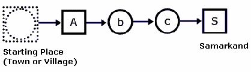
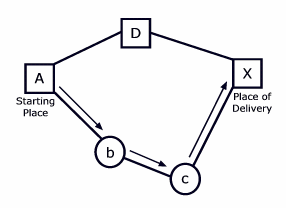
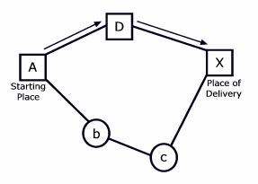

The 27th Annual ACM International Collegiate Programming Contest World Finals sponsored by IBM · Problem J
Sindbad the Sailor sold 66 silver spoons to the Sultan of Samarkand. The selling was quite easy; but delivering was complicated. The items were transported over land, passing through several towns and villages. Each town and village demanded an entry toll. There were no tolls for leaving. The toll for entering a village was simply one item. The toll for entering a town was one piece per 20 items carried. For example, to enter a town carrying 70 items, you had to pay 4 items as toll. The towns and villages were situated strategically between rocks, swamps and rivers, so you could not avoid them.



Predicting the tolls charged in each village or town is quite simple, but finding the best route (the cheapest route) is a real challenge. The best route depends upon the number of items carried. For numbers up to 20, villages and towns charge the same. For large numbers of items, it makes sense to avoid towns and travel through more villages, as illustrated in Figure 2.
You must write a program to solve Sindbad’s problem. Given the number of items to be delivered to a certain town or village and a road map, your program must determine the total number of items required at the beginning of the journey that uses a cheapest route.
The input consists of several test cases. Each test case consists of two parts: the roadmap followed by the delivery details.
The first line of the roadmap contains an integer n, which is the number of roads in the map (0 ≤ n). Each of the next n lines contains exactly two letters representing the two endpoints of a road. A capital letter represents a town; a lower case letter represents a village. Roads can be traveled in either direction.
Following the roadmap is a single line for the delivery details. This line consists of three things: an integer p (0 < p ≤ 1000) for the number of items that must be delivered, a letter for the starting place, and a letter for the place of delivery. The roadmap is always such that the items can be delivered.
The last test case is followed by a line containing the number -1.
The output consists of a single line for each test case. Each line displays the case number and the number of items required at the beginning of the journey. Follow the output format in the example given below.
1 a Z 19 a Z 5 A D D X A b b c c X 39 A X -1
Case 1: 20 Case 2: 44